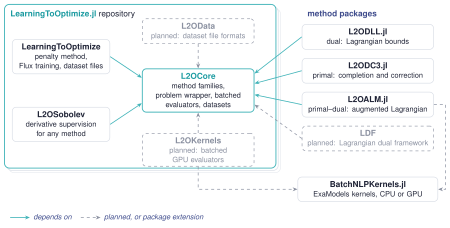
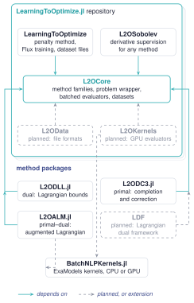
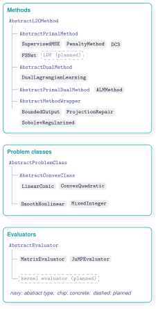
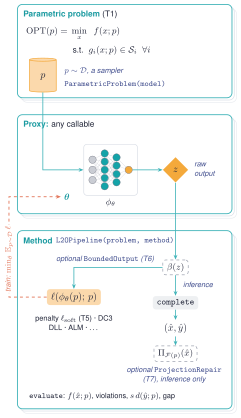

Design of the LearningToOptimize ecosystem
This page explains how the code is organized and why. The goal is that implementing a new learning-to-optimize (L2O) method takes only the code that is specific to that method. Data generation, evaluation of objectives, violations and dual bounds, samplers and dataset conventions are shared.
Packages


L2OCore, and on nothing else of the ecosystem. Solid arrows are dependencies; dashed boxes and arrows are planned packages, or package extensions (weak dependencies).| package | role | dependencies |
|---|---|---|
L2OCore (lib/L2OCore) | method hierarchy, problem classes, ParametricProblem, evaluators, datasets, method-dispatched pipeline | JuMP, MathOptInterface, LinearAlgebra, SparseArrays, Random |
LearningToOptimize | the penalty method, Flux training loop, existing dataset generation (ProblemIterator, recorders, samplers), FullyConnected models; re-exports L2OCore | L2OCore + ML and file-format stack |
L2OSobolev (lib/L2OSobolev) | method-agnostic Sobolev (derivative) supervision: SobolevRegularized wrapper, masks, derivative labels from DiffOpt | L2OCore, ChainRulesCore; DiffOpt and Lux as package extensions |
method packages (L2ODLL, L2ODC3, L2OALM, …) | one method family member each | L2OCore only (plus what the method itself needs) |
L2OKernels (planned) | batched GPU evaluators as an AbstractEvaluator backend | ExaModels / BatchNLPKernels, loaded as a package extension |
Why a lib/ subpackage instead of a separate repository? The core and the reference method evolve together while the interface settles; one repository gives one CI run, one documentation site and atomic changes. Method packages live in their own repositories because they have their own authors, papers and dependency stacks.
Why so few dependencies in L2OCore? Method packages must be able to depend on it without inheriting Flux, MLJ, CSV or Arrow. Everything heavy is either in the main package or behind package extensions.
Subpackage mechanism and Julia versions
Julia ≥ 1.11 resolves unregistered local packages from a [sources] section in Project.toml; Julia 1.10 (the LTS) ignores that section. We support both:
Project.tomldeclares[sources] L2OCore = {path = "lib/L2OCore"}(used on 1.11+);- CI runs
Pkg.develop(path = "lib/L2OCore")before testing on every version, which is what makes 1.10 work and is harmless on 1.11+; lib/L2OCorehas its ownProject.toml, test suite and CI job.
Once L2OCore is registered, [sources] and the develop step can be removed; [compat] L2OCore = "0.1" already pins the interface version.
Documentation for lib/ packages
There is one Documenter site. docs/make.jl loads both modules (modules = [LearningToOptimize, L2OCore]) and the API reference has one section per package, so cross-references between the core and the main package work and there is a single place to search.
Type hierarchy
![Type hierarchy in three trees. Methods: AbstractL2OMethod with AbstractPrimalMethod (SupervisedMSE, PenaltyMethod, DC3, FSNet, LDF planned), AbstractDualMethod (DualLagrangianLearning), AbstractPrimalDualMethod (ALMMethod) and AbstractMethodWrapper (BoundedOutput, ProjectionRepair, SobolevRegularized). Problem classes: AbstractProblemClass with AbstractConvexClass (LinearConic, ConvexQuadratic), SmoothNonlinear and MixedInteger. Evaluators: AbstractEvaluator with MatrixEvaluator, JuMPEvaluator and a planned kernel evaluator.](../assets/diagrams/learningtooptimize--types.svg)

SupervisedMSE, the repair wrappers, the problem classes and the evaluators in L2OCore; PenaltyMethod in LearningToOptimize; SobolevRegularized in L2OSobolev; DC3 and FSNet in L2ODC3; DualLagrangianLearning (built by L2ODLL.DLLMethod()) in L2ODLL; ALMMethod in L2OALM.- Families (
AbstractPrimalMethod,AbstractDualMethod,AbstractPrimalDualMethod) select fallbacks: what is predicted, which labels are generated, how the raw output is split. - Problem classes are traits of the problem, detected from the JuMP model (
detect_problem_class) or given explicitly. They exist so that a method can declare which problems its mathematics applies to (supports). - Evaluators are interchangeable backends for batched objective, constraint, violation and dual-bound evaluation.
- Wrappers (
AbstractMethodWrapper) add behavior to any method (e.g. derivative supervision) by forwarding everything to an inner method and adding a loss term.
Data flow
![How an optimization proxy is trained and used. Parametric problem: OPT of p is the minimum over x of f of x and p subject to g_i of x and p in S_i, with p drawn by a sampler. Proxy: a network phi_theta maps p to a raw output z. Method: an optional BoundedOutput layer, then either the training loss ell of phi_theta of p and p, or at inference complete, giving x-hat and y-hat, and an optional ProjectionRepair; evaluate reports objective, violations, dual bound and gap. A dashed arrow returns the gradient of the expected loss to theta.](../assets/diagrams/learningtooptimize--method.svg)

| step | call | result |
|---|---|---|
| wrap the model | ParametricProblem(model) | layouts and problem class |
| build the pipeline | L2OPipeline(problem, method) | checks supports, runs decompose |
| generate data | generate_data(pipe; sampler, optimizer) | L2ODataset: inputs, and optionally primal, dual, objective, derivatives |
| train | minimize loss(pipe, P, proxy(P)) | a trained proxy |
| complete | complete(pipe, P, raw) | Prediction(primal, dual) |
| evaluate | evaluate(pipe, P, prediction) | EvaluationReport: objective, violations, dual bound, gap |
Layouts are fixed once by ParametricProblem:
| quantity | shape | order |
|---|---|---|
inputs P | num_parameters × B | parameters(problem) (creation order) |
primal X | num_decision_variables × B | decision_variables(problem) |
dual Y | num_duals × B | constraint_refs(problem), rows dual_layout(problem)[i], signs of JuMP.dual |
Batch-first (batch = last dimension) matches Flux, Lux and BatchNLPKernels and keeps every per-instance quantity a contiguous column.
Method lifecycle
| order | the user calls | the pipeline dispatches to | if the method defines nothing |
|---|---|---|---|
| 1 | L2OPipeline(problem, method) | supports(method, class) | false: UnsupportedProblemError |
| 2 | (same call) | decompose(problem, method) | fallback by family |
| 3 | generate_data(pipe; sampler, n) | generate_data(method, pipe; …) | sample and solve, labels by family |
| 4 | loss(pipe, P, proxy(P); targets, proxy), in the training loop | loss(method, pipe, …) | supervised MSE |
| 5 | complete(pipe, P, proxy(P)) | complete(method, pipe, P, raw) | split the raw output |
| 6 | evaluate(pipe, P, prediction) | the evaluator functions | — |
What a method package writes:
| function | required? | fallback |
|---|---|---|
struct M <: Abstract*Method | yes | — |
supports(::M, ::Class) = true | yes, per class | false (no silent fallback) |
decompose(problem, ::M) | if the method predicts a subset | FullSpaceDecomposition by family |
generate_data(::M, pipe; …) | if labels differ | sample + solve, labels by family |
complete(::M, pipe, P, raw) | if there is a completion/repair | split raw output |
loss(::M, pipe, P, raw; …) | if not supervised MSE | supervised MSE |
Why supports is opt-in. Each method rests on mathematics with hypotheses: DLL's dual completion needs a conic problem, DC3's equality completion needs an invertible Jacobian block. Running DLL on a nonconvex problem or DC3's correction on nonlinear constraints silently changes what the output means. The pipeline therefore refuses unsupported classes up front with an error. Users can still override a mis-detected class explicitly (ParametricProblem(model; class = …)).
Why the pipeline object. L2OPipeline checks support once, computes the decomposition once (which can be expensive: dualization, Jacobian factorizations) and holds the evaluator. It replaces hidden caches stored in model.ext. Extension functions take (method, pipe, …) so packages dispatch on their own method type; fallbacks leave the other arguments untyped so these definitions are never ambiguous.
Methods at a glance
| method | family | problem classes | what the completion or loss does | reference |
|---|---|---|---|---|
PenaltyMethod (this package) | primal | LinearConic, ConvexQuadratic | soft loss, eq. (2) of the paper; outputs may be infeasible | Donti et al. 2021 |
DLL (L2ODLL.jl) | dual | conic (LinearConic, ConvexQuadratic) where, for every predicted $y$ in the dual cone, the completion problem (8) is strictly feasible and bounded (e.g. finite variable bounds, strictly convex quadratic objective) | completes $y$ to a dual-feasible point, so its Lagrangian value is a valid dual bound (Theorems 1 and 2 of the paper) | Tanneau & Van Hentenryck 2024; Klamkin et al. 2024 |
DC3 (L2ODC3.jl) | primal | equality constraints with an invertible Jacobian block | completion solves the equalities exactly; gradient correction reduces inequality violation (converging for linear constraints) | Donti et al. 2021 |
ALM / PDL (L2OALM.jl) | primal-dual | smooth problems, kernels for batched evaluation | augmented-Lagrangian loss with learned multipliers | Park & Van Hentenryck 2023 |
| LDF (planned) | primal | smooth problems | Lagrangian-dual loss with multipliers updated by subgradient steps | Fioretto et al. 2020 |
Method packages test these properties numerically on random instances through evaluate (violations, dual bounds compared with solver optima).
Repair layers
BoundedOutput and ProjectionRepair are AbstractMethodWrappers that work with any primal method: the first is an output layer used during training and inference that keeps predictions inside the variable bounds, the second a projection onto the feasible set at inference (convex classes only). Because they are wrappers, they forward the loss and completion to the inner method, leave dual predictions untouched, and tighten the support check (ProjectionRepair refuses non-convex classes even if the inner method accepts them).
Evaluation layer, front ends and GPUs
Every loss, completion and evaluation is expressed through the AbstractEvaluator functions (batch_objective, constraint_values, row_violation, cone_violation, dual_bound). Two backends ship today:
MatrixEvaluator: extractsA, B, b, Q, c, Honce; every batch operation is a sparse-dense product or broadcast. It is differentiable with array AD and element-type generic. Moving its arrays to a GPU (Adapt) is the plannedL2OCoreextension for linear/quadratic problems.JuMPEvaluator: per-instance reference throughJuMP.value; it is the ground truth in tests, never used in training loops.
The plan for nonlinear problems and for an ExaModels front end is a single kernel backend:
| stage | object | provided by |
|---|---|---|
| front end | a JuMP model with MOI.Parameters, converted function by function, or an ExaModels model written by the user | JuMP → ExaModels conversion (planned) |
| model | a parametric ExaModel | ExaModels |
| batch | BatchNLPKernels.BatchModel | BatchNLPKernels.jl |
| evaluator | a kernel evaluator implementing the AbstractEvaluator functions | package extension L2OCore + BatchNLPKernels (planned) |
| use | losses, completions and evaluation on CPU or GPU | every method, unchanged |
- Problems stated in JuMP or directly in ExaModels end up as a parametric
ExaModel; aBatchModelfrom BatchNLPKernels provides batched objective, constraints, Jacobian products and violations withChainRulesCorerules. - A kernel evaluator implementing the
AbstractEvaluatorfunctions on top of aBatchModelplugs into every method unchanged. It lives in a package extension (L2OCore+BatchNLPKernels), keeping the core light. - An ExaModels front end subtypes
AbstractParametricProblem(whichParametricProblemalready does), implementing the layout functions,objective_signanddefault_evaluator. - Batched solvers can label data much faster than a loop over
optimize!; a batched-modeling layer (batched parameters/constraints over JuMP, with a bridge to ExaModels and NLPModels) would letsolve_instanceshand a whole batch to such solvers. This is tracked as a follow-up issue.
CI runs on CPU. GPU paths are written without scalar indexing and are testable by running the same tests with arrays adapted to the device.
Machine-learning frameworks
L2OCore is framework-agnostic: a proxy is any callable on a batch. The main package ships a Flux training loop (train_flux!) because Flux is already a dependency. Derivative (Sobolev) supervision needs nested AD: an input-Jacobian product of the proxy inside the loss, then a gradient with respect to the weights. We measured which combinations give correct gradients (compared with central finite differences) on a two-layer network:
| proxy | outer AD | inner AD (input VJP) | result |
|---|---|---|---|
Lux (StatefulLuxLayer) | Zygote | Lux.vector_jacobian_product(…, AutoZygote(), …) | correct |
Lux (StatefulLuxLayer) | ForwardDiff | Zygote | correct |
Lux (StatefulLuxLayer) | Zygote | Zygote (Zygote.gradient inside the loss) | error (array mutation) |
| Lux | Enzyme | Enzyme | error (runtime activity / mutability) |
| Flux | Zygote | Zygote | correct |
| Flux | ForwardDiff | Zygote | correct |
| Lux or Flux | Zygote | ForwardDiff | silently wrong (nothing gradient) |
| Lux, helpers applied to a closure around the layer | Zygote | Lux.vector_jacobian_product / jacobian_vector_product | error (mutation / dual-tag ordering) |
Lux (StatefulLuxLayer) | Zygote | Lux.batched_jacobian(…, AutoForwardDiff()) | correct |
| any callable | Zygote | central differences of forward passes | correct to $O(h^2)$ (≈1e-8 relative in Float64) |
Flux Chain (Jacobian, pushforward, pullback of the raw proxy) | Zygote | Zygote pullbacks (ZygoteNestedAD) | correct |
| completion layer (keyword constructors, branches) | Zygote | Zygote | error (Zygote's second-order compilation) |
Measured with Lux 1.32, Flux 0.16, Zygote 0.7, ForwardDiff 1.5 and a recent Enzyme on a Dense(3→8, tanh) → Dense(8→2) network with Float64 weights (Float32 weights make the finite-difference reference unreliable); reproduce with julia dev/nested_ad_matrix.jl. The table is evidence for the configurations listed, not a general statement; method packages test each framework on the models they ship examples for.
Decision:
- method packages must work with any callable proxy;
L2OCorenever differentiates through the proxy itself; - Lux and Flux are both supported for losses that need nested AD, each in the configurations the tests show to be correct:
- Lux through its
vector_jacobian_product/jacobian_vector_producthelpers under an outer Zygote gradient (Lux maintains these for exactly this use, and they also work on GPUs); nestingZygote.gradientby hand inside a Lux loss fails, so derivative-supervision code calls the helpers; - Flux (a
Chain, or any Zygote-differentiable callable) with Zygote both inside the loss and for the outer gradient with respect to the weights;
- Lux through its
- the Flux loop in the main package (
train_flux!) covers first-order losses (penalty, supervised, augmented-Lagrangian losses); a method package that needs derivative supervision provides its own loss for either framework; - never put
ForwardDiffinside a Zygote-differentiated loss for parameter gradients: Zygote treats the inner call as constant and returnsnothingwithout an error.
lib/L2OSobolev follows this decision: LuxNestedAD() (exact, Lux helpers on the StatefulLuxLayer itself), ZygoteNestedAD() (exact, Zygote pullbacks of a Flux model or any Zygote-differentiable callable) and CentralDifferences() (any callable proxy, also through completion layers), all checked against finite differences of the weight gradient in its test suite, with a Flux and a Lux training run.
Datasets and trained models on the Hugging Face Hub
Datasets and trained proxies are shared under huggingface.co/LearningToOptimize. Proposed conventions (design only):
Dataset card fields
| field | example | why |
|---|---|---|
problem_id, problem_version | pglib_opf_case5_pjm/DCPPowerModel, 1.0 | reproducible problem identity |
problem_file | .mof.json with parameters | the JuMP model, readable by MOI.FileFormats |
parameter_sampler | {"type": "ScaledSampler", "low": 0.8, "high": 1.2} (#32) | inputs distribution, needed to generate more data |
layouts | names of parameters, variables, constraints in order | ties columns to model entities |
solver, solver_version, tolerances | HiGHS 1.x, primal_feas = 1e-7 | label quality |
labels | primal, dual, objective, status, optional `derivatives: pullback | jacobian` |
label_quality | max violation ≤ 1e-6, dual gap ≤ 1e-6 | measured with evaluate before upload |
splits, seed | train/val/test, 42 | comparability |
Model card fields: method (type and hyper-parameters), proxy (architecture, framework, parameter count), training_data (dataset id and revision), metrics (EvaluationReport means on the test split, gap, max violation, dual bound where the method predicts duals).
Compatibility with the existing API
All existing exports (ProblemIterator, Recorder, ArrowFile, CSVFile, samplers, FullyConnected, evaluators) are unchanged. L2OCore names are re-exported. Names that collide with other packages commonly loaded together (MLJ.evaluate) are resolved inside LearningToOptimize in favor of the L2OCore meaning; users that load MLJ too can write LearningToOptimize.evaluate.